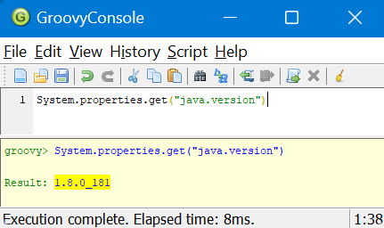
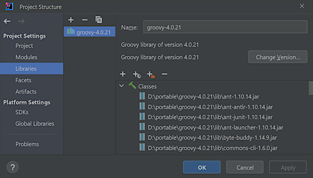
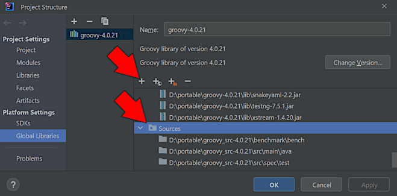

HomeIndex
HomeIndex GitHub
</>
GitHub
</>
Installation
Download page: [groovy_site, https://groovy.apache.org/download.html]
Binary installation is used. The file is: apache-groovy-binary-4.0.21.zip.
Sources may be downloaded at https://github.com/apache/groovy/releases/tag/GROOVY_4_0_21,
file groovy-GROOVY_4_0_21.zip.
>certutil -hashfile apache-groovy-binary-4.0.21.zip sha256
SHA256 hash of apache-groovy-binary-4.0.21.zip:
5ef878f70db8b642d204e9a410c519c1131a3e7a9ddb4b6910d214909cb2e98a
>type apache-groovy-binary-4.0.21.zip.sha256
5ef878f70db8b642d204e9a410c519c1131a3e7a9ddb4b6910d214909cb2e98aInstallation instructions: [groovy_site, https://groovy-lang.org/install.html#_install_binary]
Unzip into a directory by choice. Set the GROOVY_HOME environment variable to the directory
where the distribution was unpacked. Add GROOVY_HOME/bin to the PATH environment variable.
Set the JAVA_HOME environment variable to point to the JDK.
>groovysh
Jun 12, 2024 7:29:35 PM java.util.prefs.WindowsPreferences <init>
WARNING: Could not open/create prefs root node Software\JavaSoft\Prefs at root 0x80000002. Windows RegCreateKeyEx(...) returned error code 5.
Groovy Shell (4.0.21, JVM: 1.8.0_181)
Type ':help' or ':h' for help.
-------------------------------------------------------------------------------
groovy:000> 2+2
===> 4
groovy:000> :exitNote
The warning above (on Windows) may be ignored, see Stack Overflow: Groovy Shell warning "Could not open/create prefs root node ...".
Also Swing interactive console (groovyConsole command) may be used:


The following items may be added into the .gitignore file:
.idea
/code/project1/code.iml
/code/project1/out/Here's how Groovy sources may be attached:

In this case the downloaded sources file groovy-GROOVY_4_0_21.zip was unpacked into a directory
by choice, and this directory (containing the src subdirectory) was added as the source.